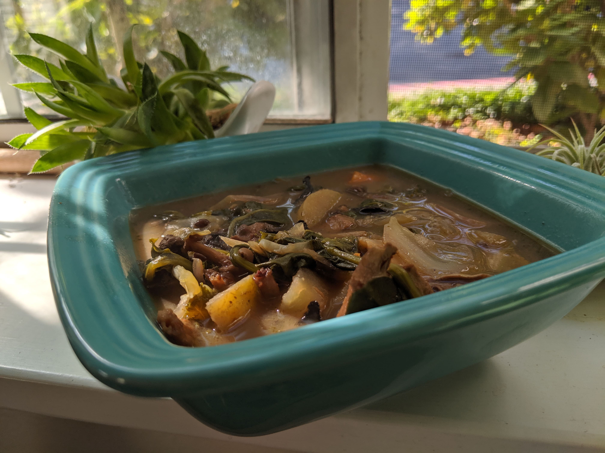

Mushroom, Spinach, and Potato soup
Besides the chopping, this soup requires almost no watching over, meaning you can get your homework done or go for a walk while it cooks!
Ingredients:
- mushrooms
- potatoes
- spinach
- salt and pepper
- mixed spices
- optional: veggie broth or mushroom broth
- Prepare the mushrooms. Mine were the gourmet dried mushrooms that required soaking, but you could also use fresh for this!
- Chop up the potatoes.
- Put everything except the spinach into the Instant Pot with enough broth or water to cover
- Cook on "Soup" setting for 15 minutes.
- Once its done, top with spinach and mix in to lightly steam
- Enjoy your souper easy soup!